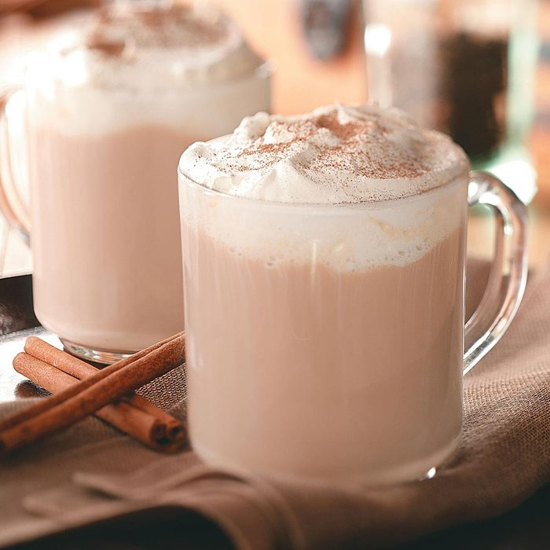

Vanilla Chai Tea

Description
This warm chai is comfort in a cup. It’s extra special with a dollop of fresh whipped cream and a sprinkling of ground allspice on top.
Ingredients
- 8 whole peppercorns
- 1/2 teaspoon whole allspice
- 1 cinnamon stick (3 inches)
- 4 whole cloves
- 8 tea bags
- 1 tablespoon honey
- 4 cups of boiling water
- 2 cups 2% milk
- 1 tablespoon of vanilla extract
- 1/2 cup heavy whipping cream
- 1-1/2 teaspoons confectioners' sugar
- Ground allspice
Directions
- Place the first 5 ingredients in a large bowl. With the end of a wooden spoon handle, crush mixture until aromas are released. Add tea bags, honey, and boiling water.
- Steep for 6 minutes
- In a small saucepan, heat milk. Strain tea into a heatproof pitcher; stir in milk and vanilla
- In a small bowl, beat cream until it begins to thicken. Add confectioners' sugar; beat until soft peaks form. Top servings with whipped cream; sprinkle with allspice.